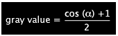
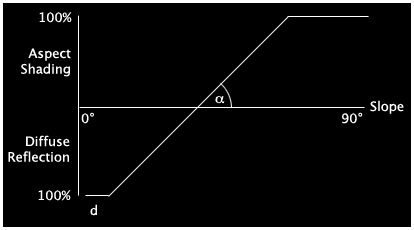

MapLink Pro Studio supports several methods of terrain sun shading:
Aspect is the downhill direction of slope and is derived as a by-product of the slope calculation. Aspect-based shading uses the direction of the slope relative to the sun direction, but takes no account of the sun elevation. Aspect shading is calculated according to a modified cosine shading equation (Moellering and Kimerling, 1990).

Aspect-based shading is well suited for portraying mountainous areas.
Diffuse reflection assigns each pixel a gray value proportional to the cosine of the angle between the surface normal and the light vector. Diffuse reflection more accurately depicts flatter and uneven lowlands.
As Diffuse Reflection and Aspect-based shading both have issues, the Combined approach is to combine Diffuse Reflection and Aspect-based shading as a function of slope according to the following diagram, using minimum and maximum slope.

Setting the Light Shading:
Typical values are:
References: